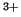

The code can be run alongside the GAUSSIAN code in which case atoms in the system associated with the quantum cluster need to be identified. This option works presently only with pairwise interatomic interactions. To specify atoms belonging to the quantum cluster (QC) put the @ character immediately after the atomic symbol, e.g. :
Cr@ x y z (iRx iRy iRz)
This option was originally designed to calculate the electronic structure of the Cr

defect in MgO taking into account all polarisation charges in the junction as obtained by a non-selfconsistent run of the SCI-FI code.Please, contact the present authors if interested in knowing this in more detail!